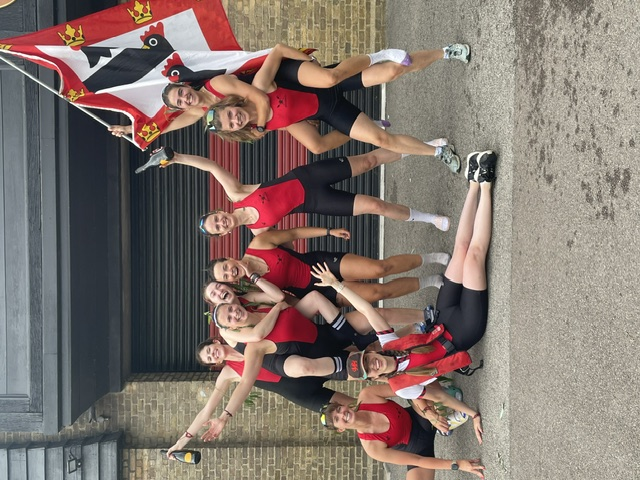
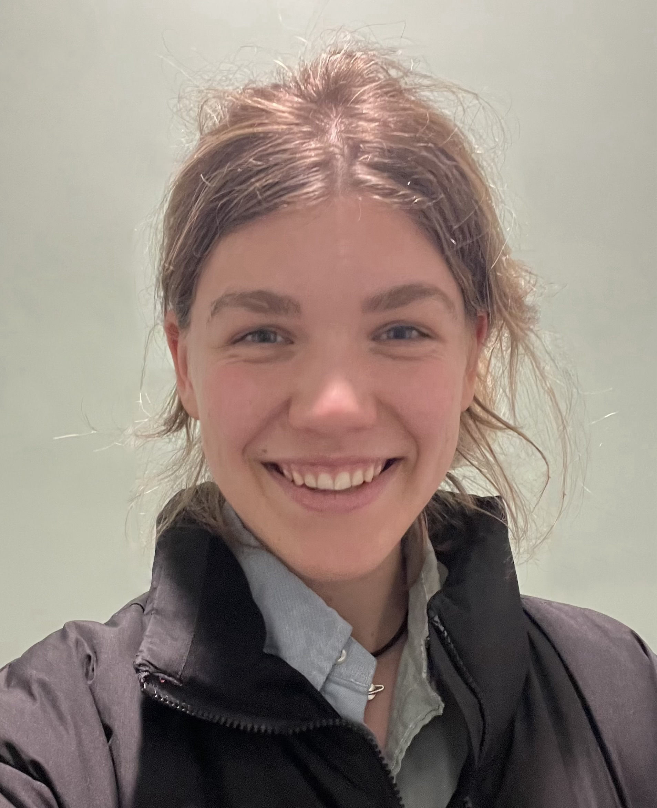

Amanda Stoffers
PhD student, Kavli Institute for Cosmology & Cavendish Laboratory, University of Cambridge.
I am an astrophysicist working on how to turn galaxy data into physical parameters. My research sits at the intersection of stellar population synthesis, Bayesian inference and machine learning: building forward models of galaxy spectral energy distributions (SEDs) and the statistical machinery needed to fit them robustly.
Most of my time goes into making SED fitting both more physical and more honest about its uncertainties. I develop CERIDWEN, a GPU-native, differentiable SED-fitting framework written in JAX that uses gradient-based Hamiltonian Monte Carlo to infer stellar masses, star-formation histories, metallicities and dust properties. I also work on the inverse problem of constraining Lyman-continuum escape from galaxies during the Epoch of Reionization using Bayesian modelling and symbolic regression — inferring something we mostly cannot observe directly from the things we can.
I am a member of the JADES and LAPIS collaborations.
Please do get in touch if any of this overlaps with your own work; I am always happy to talk about SED fitting, differentiable astrophysics, or why the forward model is where assumptions quietly become conclusions. Contributions to the public code bases are very welcome.
When I am not arguing with a likelihood function, I row, currently in the Jesus College Boat Club's first women's crew, under the flag of the three chickens. I also bake sourdough, primarily as a bribery instrument for my crew. I am told both activities make me insufferable in distinct and complementary ways.

